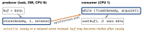

c · folio
In one line: volatile binds only the compiler: every access in the source is
performed, none merged or dropped. It gives no atomicity, no ordering of
other memory and no CPU barrier. State shared with an interrupt, a signal handler or
another CPU needs a lock-free _Atomic, a critical section, or a lock.
Download PDF Print view LaTeX source
What volatile guarantees (C23)
- A volatile access is a side effect (5.1.2.4): performed strictly as the abstract machine says — never dropped, merged or added — and part of observable behaviour; what counts as one access is implementation-defined (6.7.4.1). Meant for memory-mapped I/O and data changed by an “asynchronously interrupting function”.
- Without it
while (!done) {} may read done once — nothing in the loop writes it — and become if (!done) for (;;);.
- Also needed: a non-volatile local changed between
setjmp and longjmp is indeterminate after the jump (7.13.2.1).
What it does not do
- Atomicity:
v++ is load, add, store (above).
- Whole values: Armv7-M is single-copy atomic only for bytes, aligned halfwords and aligned words;
LDRD/LDM are word sequences an exception may abandon and restart — a 64-bit read can mix two writes.
- Ordering: GCC — “accesses to non-volatile objects are not ordered with respect to volatile accesses”;
buf[i] = x may move past ready = 1.
- CPU barrier: none emitted; another CPU or bus master may see stores in another order.
- Cache bypass: it stops register caching only. DMA with a D-cache: clean before the device reads, invalidate before the CPU reads (CMSIS
SCB_CleanDCache_by_Addr, 32-byte lines), or non-cacheable RAM.
- Race freedom: conflicting accesses in two threads, one not atomic, neither happening before the other = data race = UB (5.1.2.5), volatile or not. Linux: volatile for shared data is “almost never correct”.
<stdatomic.h> in C23
- Optional:
__STDC_NO_ATOMICS__ may omit it; __STDC_VERSION_STDATOMIC_H__ = 202311L. Declare _Atomic T, _Atomic(T) or atomic_uint.
n++, n += k on an atomic are seq_cst read-modify-writes (6.5.3.5, 6.5.17.3); n = n + 1 is a seq_cst load, then a seq_cst store (6.2.6.1) — two steps.atomic_load/store/exchange, atomic_fetch_add/sub/or/xor/and, atomic_compare_exchange_strong/weak; each has _explicit(…, order), the plain form means seq_cst. Signed fetch_add wraps: no UB.compare_exchange_weak may fail spuriously (built for LL/SC machines): use it in a loop; a failure copies the current value into *expected. Failure order: not release/acq_rel, not stronger than success.ATOMIC_INT_LOCK_FREE etc.: 0 never · 1 sometimes · 2 always; atomic_is_lock_free(p) at run time. Only atomic_flag must be lock-free; otherwise GCC calls an external routine (libatomic).- UB / gone: a member of an atomic struct (6.5.3.4);
memcpy/memset over an atomic leaves it indeterminate; ATOMIC_VAR_INIT is removed — plain initialiser or atomic_init (itself not atomic).
order | valid on | guarantees |
|---|
relaxed | all | indivisible + one modification order per object; nothing else — counters |
consume | load, RMW | orders only what depends on the value; GCC compiles it as acquire |
acquire | load, RMW | reads a release ⇒ every write before that release is visible after |
release | store, RMW | publishes all earlier writes to an acquire that reads this value |
acq_rel | RMW | both — exchange, fetch_add, CAS that hand state over |
seq_cst | all | acq/rel + one total order S of all seq_cst ops; the default |
Fences and barriers
atomic_thread_fence(o): acquire / release / both / seq_cst fence, with a CPU barrier where the target needs one; relaxed = no effect.atomic_signal_fence(o): same ordering, only against a handler on the same thread — compiler ordering, no fence instruction.asm volatile("" ::: "memory"): GCC compiler barrier; it “does not prevent the processor from doing speculative reads”.- Arm (CMSIS):
__DMB() orders explicit accesses (not completion) · __DSB() waits until they complete · __ISB() flushes the pipeline.
Signal handlers (hosted C)
C’s only model of asynchronous interruption. A handler may touch lock-free atomics and constexpr objects or assign a volatile sig_atomic_t (SIG_ATOMIC_WIDTH ≥ 8), and call only abort, _Exit, quick_exit, signal for its own signal and lock-free <stdatomic.h> functions — else UB (7.14.1.1).
Publish with release / acquire

How hardware makes n++ indivisible
| CPU | mechanism | notes |
|---|
| Cortex-M0/M0+ (Armv6-M) | none: mask with cpsid i (PRIMASK) | no LDREX/STREX, no BASEPRI |
| Armv7-M: M3, M4, M7 | LDREX … STREX loop | STREX 0 = stored, 1 = retry; no other store between; granule 1–512 words |
| AArch64 | LDXR/STXR; Armv8.1 LSE: LDADD, CAS, SWP | GCC -moutline-atomics (default) picks at run time |
| x86 | LOCK prefix: XADD, CMPXCHG | XCHG with memory is always locked |
| RISC-V “A” | LR/SC (Zalrsc) + AMOADD, AMOSWAP… (Zaamo) | an AMO is one instruction, no loop |
| Xtensa: ESP32, ESP32-S3 | S32C1I: store if word = SCOMPARE1 | ESP-IDF spinlocks; a single-core target without it masks interrupts |
Cortex-M interrupt priority under FreeRTOS
- In an ISR only
…FromISR calls: the others may block, and an ISR has no task to block. Collect xHigherPriorityTaskWoken, then one portYIELD_FROM_ISR() at the end. A direct-to-task notification is the cheapest way to unblock a task.
- Only the top bits of the 8-bit priority field exist. An API-calling ISR left at the default 0 sits above any legal MAX_SYSCALL: no critical section can mask it.
taskENTER_CRITICAL(): M4F port raises BASEPRI, M0 port cpsid i; nests (a counter); keep it a few lines. In an ISR: s = taskENTER_CRITICAL_FROM_ISR() … taskEXIT_CRITICAL_FROM_ISR(s). vTaskSuspendAll() leaves interrupts on.- No mutex in an ISR (its priority inheritance is about tasks); a binary semaphore has none. Mars Pathfinder, 1997: inheritance off → inversion → resets.
Two CPUs — ESP-IDF v6.1
- SMP: masking interrupts on one CPU is not mutual exclusion.
portENTER_CRITICAL(&mux) masks this CPU up to MAX_SYSCALL, then spins on mux with compare-and-set; _ISR forms in handlers; portMUX_TYPE mux =
portMUX_INITIALIZER_UNLOCKED. No FreeRTOS call, nothing blocking inside. Single-core targets: no spinlock, just the mask.
tskNO_AFFINITY tasks run on either CPU — two at the same instant. An interrupt is allocated on the CPU that calls esp_intr_alloc.ESP_INTR_FLAG_IRAM: handler in IRAM (IRAM_ATTR), its data in DRAM; without it the ISR is postponed while a flash write/erase has the cache off.
Example — ISR counts, task drains
static _Atomic uint32_t events; static TaskHandle_t worker;
void IRAM_ATTR on_edge(void *arg) { // ISR
atomic_fetch_add_explicit(&events, 1, memory_order_relaxed);
BaseType_t woken = pdFALSE;
vTaskNotifyGiveFromISR(worker, &woken);
portYIELD_FROM_ISR(woken); // switch now if it outranks us
}
void worker_task(void *arg) {
for (;;) { ulTaskNotifyTake(pdTRUE, portMAX_DELAY); // sleep
handle(atomic_exchange(&events, 0)); } // read + reset: ONE step
}
Traps
handle(n); n = 0; drops every increment in between — atomic_exchange.- A 64-bit
_Atomic on a 32-bit MCU may take a lock: ATOMIC_LLONG_LOCK_FREE.
- Interrupts off on one ESP32 CPU ≠ exclusion. A compiler barrier ≠ a CPU fence.
Related: c-bits-and-registers ·
c-undefined-behavior-and-build · c-memory-layout · os-fundamentals ·
Locks & synchronisation primitives · Sanitizers & runtime checkers · Concurrency patterns